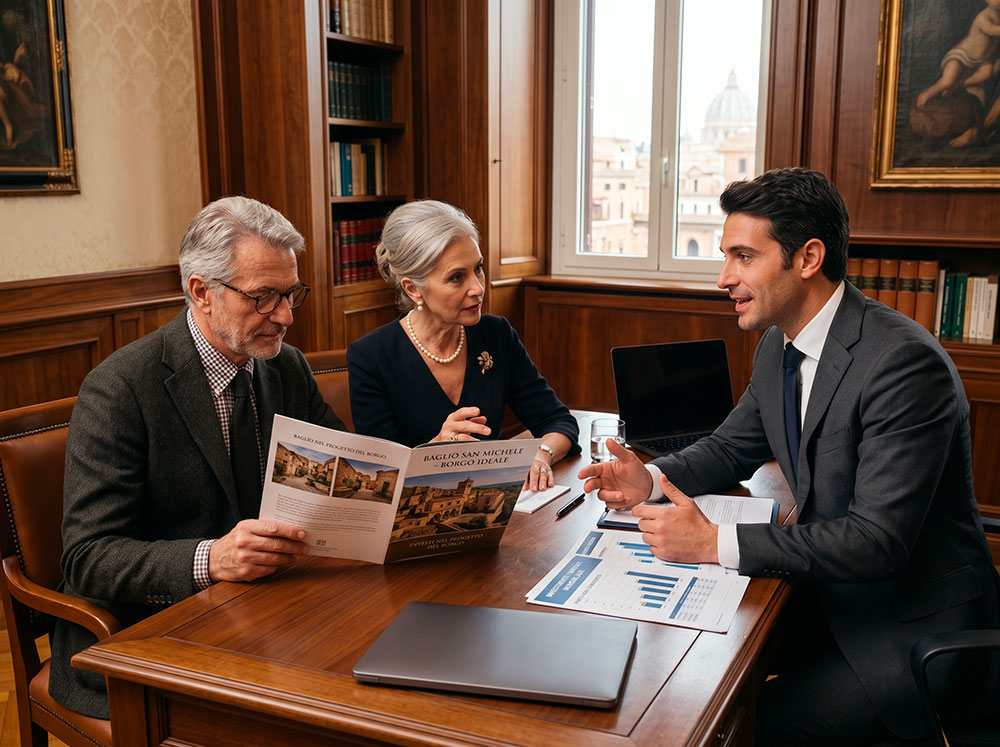

Investimento etico
Un investimento di senso e di valore
In un contesto di forte incertezza economica e finanziaria, sempre più investitori cercano opportunità concrete, stabili e allineate ai propri valori. Il Baglio San Michele rappresenta un investimento etico di lungo periodo, fondato su beni reali e su un modello comunitario strutturato.

Perché questo investimento è diverso
Beni reali e tangibili
Il capitale è investito in unità abitative concrete: 14 appartamenti nel baglio storico del XVI secolo e 20 nuove case coloniche in pietra iblea. Si tratta di un patrimonio fisico con valore intrinseco, non soggetto alle oscillazioni dei mercati finanziari.
Un modello anti-speculativo
Il progetto è strutturato con clausole anti-speculative e regole di governance chiare. L’obiettivo non è la plusvalenza rapida, ma la creazione di valore durevole attraverso la qualità costruttiva, la gestione condivisa e la stabilità della comunità.
Comunità come fattore di stabilità
L’indole intenzionale della comunità riduce drasticamente i rischi tipici degli investimenti immobiliari. Una comunità coesa e responsabile genera efficienza e tutela il valore nel tempo.
Flessibilità per le famiglie (valore aggiunto)
Il progetto prevede un meccanismo di transizione interno tra Fase 1 e Fase 2 che permette alle famiglie di evolvere il proprio spazio abitativo restando all’interno della comunità.
Dati finanziari di sintesi
Investimento totale stimato
€ 15,1 – 15,6 milioni
Costo Fase 1 (Restauro Baglio)
€ 2,2 milioni
Costo Fase 2 (Case coloniche)
€ 12,8 – 13,3 milioni
Ricavi totali attesi
€ 20,2 milioni
Profitto lordo stimato
€ 5,1 – 5,7 milioni
Payback period
3,3 – 3,6 anni
IRR Stimato
26–30 %
Scenario base • Anche nello scenario più conservativo l’IRR rimane superiore al 22%.
Rischi e mitigazioni
Rischio di mercato immobiliare
Forte domanda di residenze stabili di qualità in Sicilia, prezzi competitivi e posizionamento etico che riduce la concorrenza speculativa.
Rischio di rotazione residenti
Meccanismo di transizione interno tra Fase 1 e Fase 2 che favorisce la permanenza delle famiglie all’interno del progetto.
Rischio di governance
Capitolo dei Savi con regole chiare, clausole anti-speculative e rendicontazione periodica trasparente.
Rischio di esecuzione cantieri
Restauro filologico graduale nella Fase 1 e costruzione ex-novo con criteri bioclimatici nella Fase 2.
Governance e trasparenza
La comunità è governata dal Capitolo dei Savi, un organo di 9 membri scelti per competenza e rappresentativi delle anime del progetto.
Il Capitolo gestisce le risorse comuni, approva i nuovi nuclei familiari, garantisce il rispetto del Regolamento e tutela il bene comune attraverso clausole anti-speculative e rendicontazione periodica.